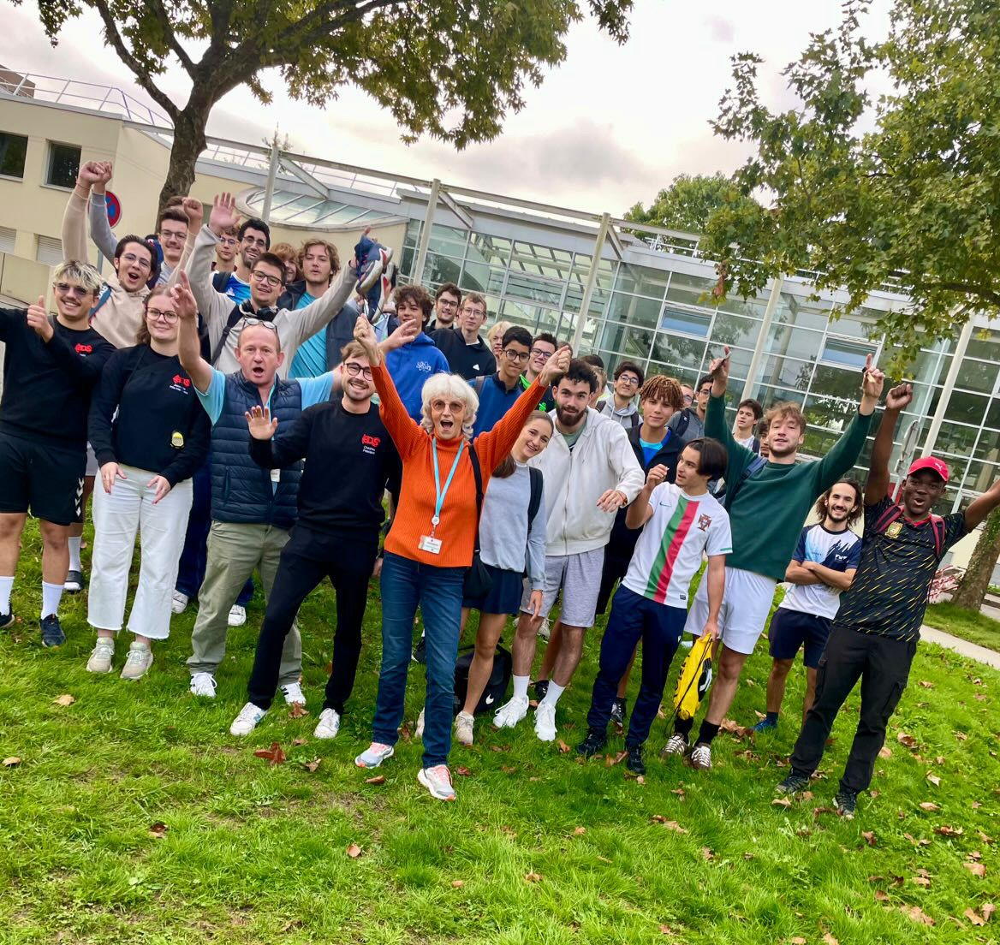
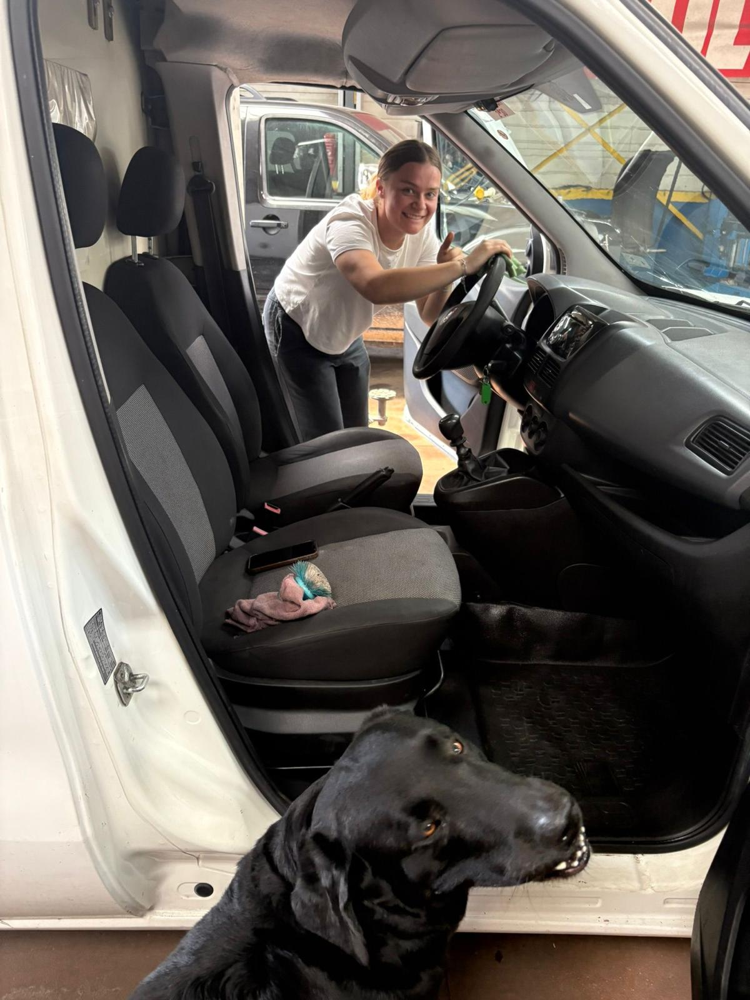
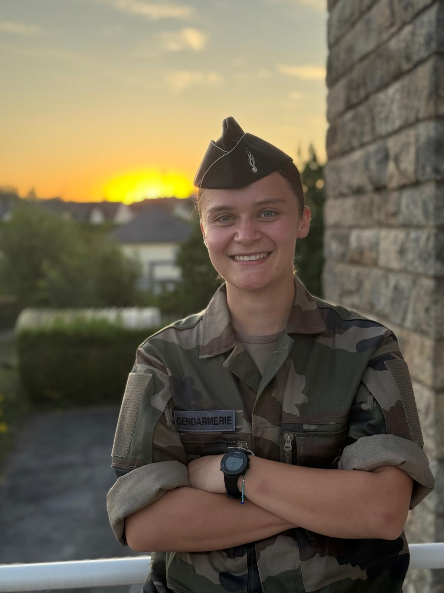
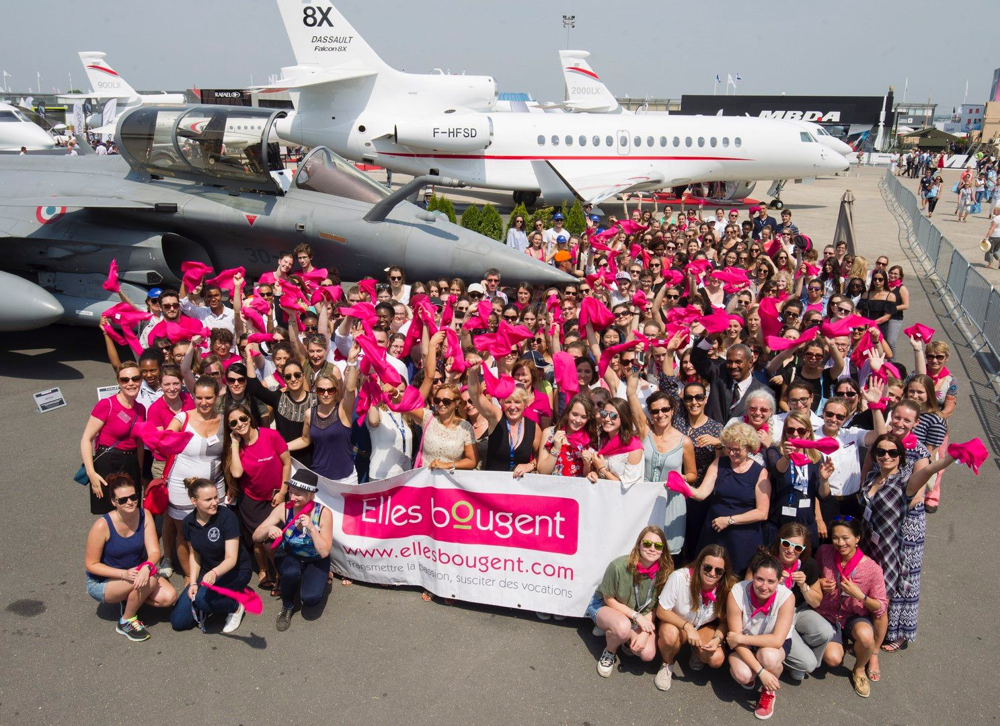

Mi trayectoria se ha construido paso a paso: explora cada fecha para saber más.
2027 – Mirar hacia el futuro
“Especializarme en materiales, manteniéndome abierta a lo que venga.”
Tras este año de césure dedicado a la elaboración y caracterización de materiales, tengo previsto volver a IMT Atlantique para mi último año y después irme al extranjero para un intercambio académico, para seguir profundizando mi comprensión de la ciencia de materiales en otro entorno. Todavía no he decidido un sector de aplicación concreto — prefiero mantenerme abierta a lo que mi curiosidad me lleve a descubrir — pero quiero terminar mis estudios de ingeniería con una verdadera experiencia experimental, que pueda poner al servicio de un entorno industrial exigente.
2026 – Adentrándome en la ingeniería nuclear
“Convertir modelos teóricos de núcleo en datos reales de reactor.”
Durante unas prácticas de cuatro meses en el CEA Cadarache, trabajé en la construcción de un esquema de núcleo neutrónico completo, utilizando códigos de cálculo deterministas desarrollados internamente. El objetivo era pasar de la etapa de ensamblaje a un núcleo completo. Lo que más disfruté fue profundizar mis conocimientos de neutrónica — comprender la física y los efectos en juego dentro de un núcleo de reactor. Lo más difícil fue familiarizarme con el código, lo cual exigió mucha perseverancia.
2025 – Compartir y unir
“Crear, transmitir y reunir.”
Comprometida con el Buró de Deportes y la federación estudiantil, participé en la organización de eventos deportivos y solidarios como Octubre Rosa o un torneo de deporte adaptado que reunió a casi 600 participantes. También gestioné la tesorería y acompañé a 13 asociaciones, distribuyendo un presupuesto global de 500 000 € según sus necesidades y proyectos.

2024 – Experiencia sobre el terreno
“Aprender haciendo.”
Durante mis prácticas de primer año trabajé como mecánica en un taller de automóviles. Realicé operaciones de mantenimiento, reparaciones básicas y participé en el desmontaje y montaje de motores. Esta experiencia me hizo consciente de los límites ambientales de ciertas prácticas industriales y reforzó mis ganas de mejorarlas.

2025 – Servir cerca de la población
“El mismo compromiso, con otro uniforme.”
Tras llegar a Nantes, me incorporé a la reserva operativa de la Gendarmería Nacional. Una vez finalizada la formación, serví como brigadier‑jefe para reforzar unidades locales en misiones puntuales. Disfruto especialmente de las intervenciones nocturnas: requieren adaptabilidad, sangre fría y la capacidad de tomar decisiones rápidas en situaciones imprevisibles.

2023 – Elegir la ingeniería
“La ingeniería como continuación lógica.”
Ingresé en IMT Atlantique para formarme en los retos energéticos. Desde el primer año desarrollé un fuerte interés por la termodinámica y la mecánica de fluidos, dos disciplinas que despertaron mis ganas de comprender mejor los sistemas energéticos. En segundo año me especialicé en energía nuclear, lo que me proporcionó una base científica sólida: funcionamiento de reactores, ciclo del combustible, gestión de residuos, modelización Monte Carlo, factores humanos, física nuclear. Aunque no me veo necesariamente trabajando en el sector nuclear, esta formación me enseñó rigor, análisis de sistemas complejos y la importancia de la seguridad y la sostenibilidad. Hoy me atrae la intersección entre la energía, la ciencia de materiales y las soluciones más sostenibles. La energía nuclear fue una etapa clave, pero ahora quiero contribuir a innovaciones más responsables y alineadas con los retos ambientales actuales.
2021–2023 – Explorar para comprender mejor
“Probar, ajustar y afinar mi dirección.”
Autun — Clase preparatoria MPSI
Comencé mis estudios superiores en una clase preparatoria MPSI en el liceo militar de Autun, acompañada de una formación militar intensiva (cursos comando y períodos de instrucción del Ejército).
Toulouse — L2 Mecánica (Université Paul Sabatier)
Luego continué con una licenciatura reforzada en Mecánica en Toulouse, donde estudié electromagnetismo, óptica, termodinámica, transferencia de calor y fundamentos de la mecánica (sólidos y fluidos).
Amiens — L3 Energía y Materiales (UPJV)
Realicé mi tercer año en Energía y Materiales en Amiens, donde estudié retos energéticos, conversión de energía, termodinámica, transferencia de calor, mecánica de fluidos, ingeniería eléctrica, así como las bases de la ciencia y caracterización de materiales.
Este año confirmó mi interés por los materiales, el trabajo de laboratorio y el vínculo entre energía y materia.
2021 – Elegir las ciencias
“El bachillerato científico fue mi primer paso hacia la ingeniería.”
Obtuve un bachillerato científico con matrícula de honor en el liceo Marie‑Curie de Nogent‑sur‑Oise, con especialidades en Física‑Química, Matemáticas y Ciencias de la Ingeniería, además de la opción de Matemáticas Avanzadas.
2018 – Instituto
Mi primer encuentro con la ingeniería“Esta visita no solo me mostró qué era la ingeniería, sino que me hizo ver que yo también podía formar parte de ella.”
En mi último año de instituto visité el Salón Aeronáutico de París con la asociación Elles Bougent, y fue un verdadero punto de inflexión: al hablar con ingenieras apasionadas, comprendí por primera vez que la ingeniería podía ser realmente un camino para mí.
